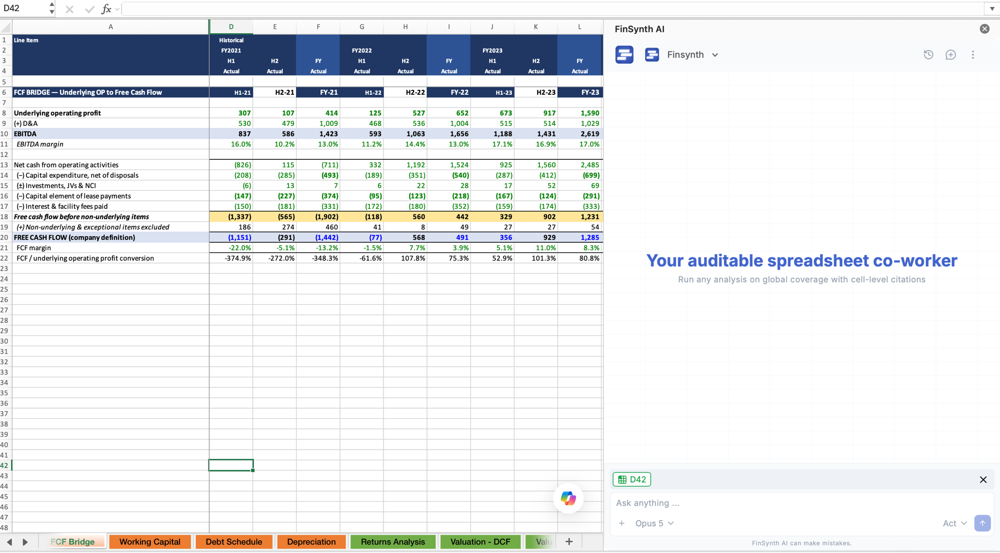
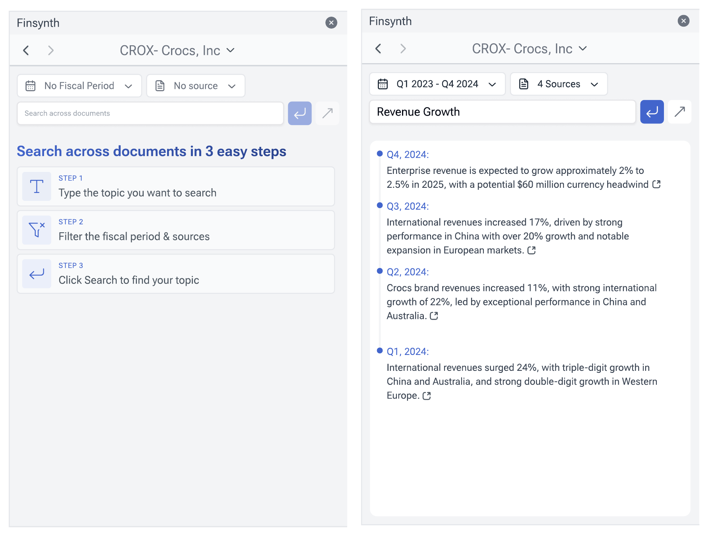
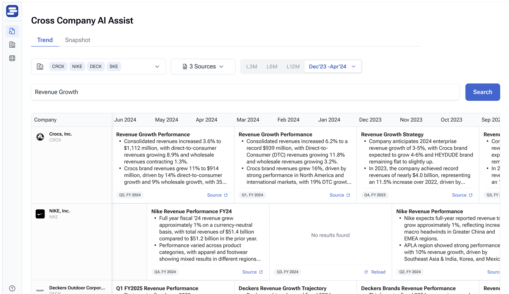
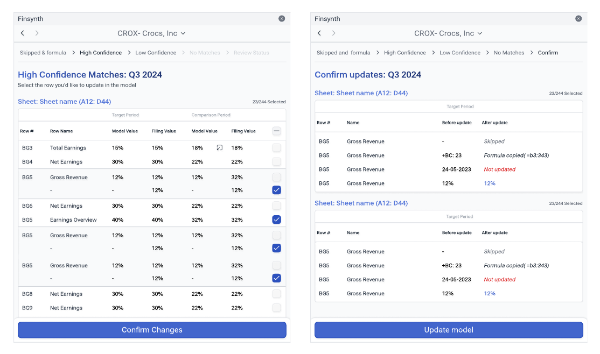
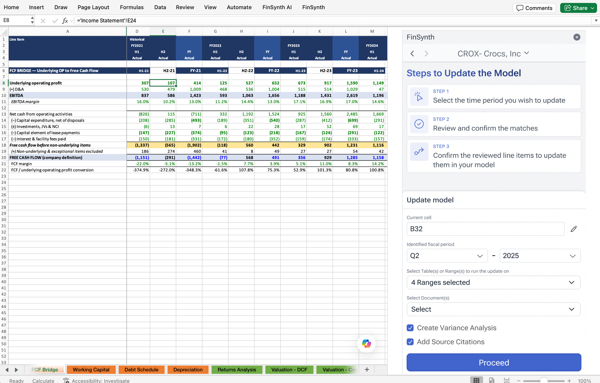
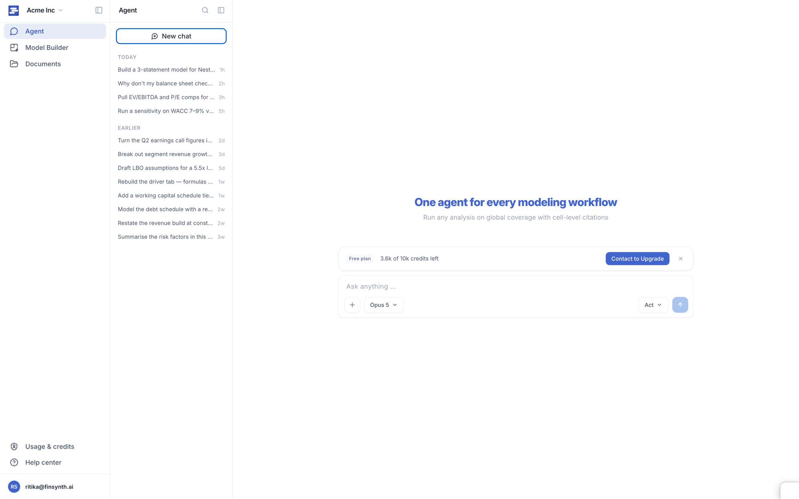
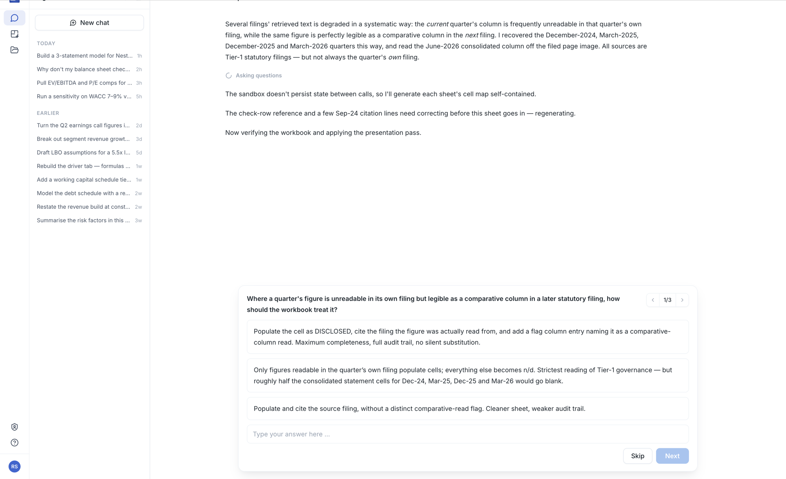
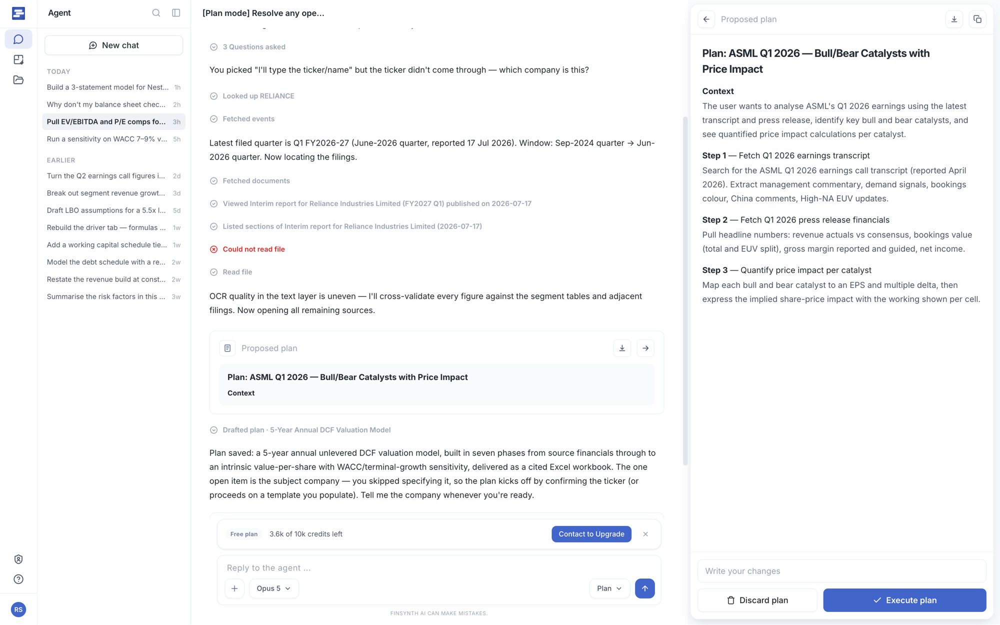
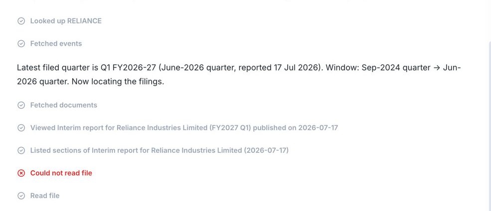

FinSynth AI
FinSynth AI
Turning financial research into model‑ready work.
FinSynth helps public-equity analysts research companies, investigate financial questions, and bring the answer back into the model.
Meet the agent ↓
- Role
- Product and Design (end to end)
- Project timeline
- April 2026 – Present
- Platform
- Web + Excel
- Team
-
- Ritika ShakkerwalFounding Product Designer
- Three engineers
- Founders
What an analyst’s day actually looks like
Equity analysts turn filings and live data into models they can defend.
An answer you can’t trace back isn’t a productivity gain. In this job it’s a liability.
That is the clean version of the job. In reality, analysts rarely get one question at a time. Each question reveals a different design challenge: understanding what the analyst is really asking, keeping every answer tied to its source, and updating a live model without losing context.
An analyst’s problems don’t arrive one at a time
The loop is tidy. The day isn’t.
- Why did gross margin step down in Q3?
- One-off, or the new run rate?
- Which filing has the segment split?
- Did guidance change, or just the tone on the call?
- The 10‑K dropped. What breaks in the model?
- Did the share count restate?
- Does the model still tie to the filing?
- Where did this number come from?
- Can I defend this to the PM tomorrow?
- If this assumption moves, what else moves?
- Earnings week: all 40 report at once.
- There has to be a better way.
A real day doesn’t queue its problems. They land together, and they interrupt each other.
Three threads run through every note on that wall: uncertainty about what’s actually being asked, the cost of being wrong on work that carries your name, and a live model that moves when you touch it. These were the problems I designed FinSynth around.
FinSynth already solved parts of the job.
Every workflow was a button. You picked the one that matched what you had already decided to do.
-
01AI AssistFind information across filings.

-
02Trend AnalysisCompare companies and trends.

-
03Model UpdateBring changes into the model.

Where the workflows stopped
- 01 · Know what you need
- 02 · Find the workflow
- 03 · Run the workflow
FinSynth could run a known workflow, but it couldn’t recognize an unfamiliar need. Its capability was limited to the workflows someone had already thought to design. So the design question became simple: what if FinSynth could work out the workflow?
From finding the workflow to stating the goal
You chose the workflow.
The agent determines the work.
- Know what you need
- Choose workflow
- Run
- Output

- Describe the goal
- The agent determines the steps
- Tools
- Output
The product stopped waiting to be told which workflow to run. Then you described what you were trying to do, and it worked out the steps.
Introducing the FinSynth agent
You define the goal and the agent works out the rest: its own steps, the tools it calls, and work that can land in a live model.

FinSynth’s research agent isn’t another workflow alongside the first three; it’s a different kind of product. Where every workflow was a button, there is now one input that takes the goal in the analyst’s own words. Given a goal, it decides which steps to take. It calls tools and reads what comes back. It produces work (an answer, a table, a set of changes), and that work can reach a live financial model, the artifact the analyst’s name is on.
Every ability that removes the ceiling is a new way for the product to be wrong somewhere the analyst can’t see.
That put the hard questions somewhere the old product never had them: before the work starts, and while it runs.
The anatomy set the boundaries
What the system actually is, what that constrains, and the three places a person can step in.
My job was making the reliability usable: deciding what the agent should do, how it should show its work, and when to put a human in the loop. Engineering made the AI reliable. I was doing that without a PM or a design team, directly with the founders and the engineers.
The agent decides the steps, so the analyst can no longer predict what will run. Tools return structured events, so a factual record of what actually happened exists, if the interface chooses to use it. Writes can reach a live model, so a wrong step doesn’t stay inside the product.
With an agent, the system decides the shape of the design job.
That was the turning point for deciding what features the agent needed: not one safety screen at the end, but a place to inspect, correct, or stop the work at every seam. The three decisions that follow are those checkpoints.
What is the agent actually being asked to do?
A goal arrives the way people talk. How has marketing spend trended? For which company? Over what period? Trended against what?
-
01The agent asks
![The shipped agent thread in plan mode. The run opens with an instruction to resolve any open questions before producing a plan and to change nothing in the workbook. The agent replies that it has no task to plan around yet and asks for the essentials, a collapsed row records that three questions were asked, and the one it is still waiting on asks which company the request is about. Below that, every lookup, filing fetched and file read is listed as its own step, including one marked in red that could not be read, and a Proposed plan card sits at the foot of the thread.](assets/finsynth/fia-asks-first.png)
-
02The question cards

How do you turn a raw capability into something a person can rely on?
An agent may know the steps. The analyst still needs to see and shape them.

I’d been watching how Claude handled the same shape of problem.
It plans before it acts. You can push back before anything happens.
In a chat window that’s a nice touch.
In a spreadsheet I wasn’t convinced.
The cost of changing your mind is completely different.
A revise flow keeps you asking. An editable plan lets you correct.
I decided it had to be built that way: regeneration would have destroyed the cheapness the planning step existed to create.
The product still has no revise concept anywhere in it. A plan can be edited, executed, or discarded.
Where does trust live: in the answer, or in the product?
Edit Query fixed the ask. The plan fixed the moment before the work. Then the work ran.
And the analyst was now watching a system make a sequence of choices they hadn’t chosen.
The easy version of AI trust is conversational. The model tells you how confident it is, apologises when it’s wrong, explains itself in a paragraph. None of that survives contact with someone who has to defend the number.
The agent was doing everything right. Nobody could tell.
Ask the model to describe each tool before it calls it. One prompt, it reads well, and it could have shipped that week.
Then: you’d be asking it to describe an action before anyone (including the model) knows what that action is going to be.
A guess dressed as a status update, inside a product whose entire argument is that you can check its work.
So I went the other way. I took what the backend was already sending, sat with it, and worked out the pattern in the fields: a name in there, something displayable, something that might actually be useful to the person watching.

What the analyst reads is never generated. It’s derived from what actually happened.
Thinking…
Checking workbook for errors…
- Opened Airbus 2024.xlsx · 4 sheets
- Read Model!A1:J75
- Failed to read Airbus 20-F · filing not available
- Read Q4 Earnings · 10Q
- Wrote 12 cells to Dashboard
- Checking Model!A1:J75 for errors
Checked Model!A1:J75 for errors · 3 found
The number still has to be defended. What changed is what you can hold up when it is: a plan you corrected before the work started, and a line that says what actually happened when it ran.
FinSynth is in pilot. There’s no adoption curve to show you yet.
What has already changed is the product’s contract with the analyst. They no longer have to begin by knowing the correct workflow. They state an objective, and at every point where the agent could go wrong, the question it heard, the plan it drew, the tools it ran, there is a place to inspect it, correct it, or stop it.
On day one you had to already know what you wanted. Now the product asks what you’re trying to do.